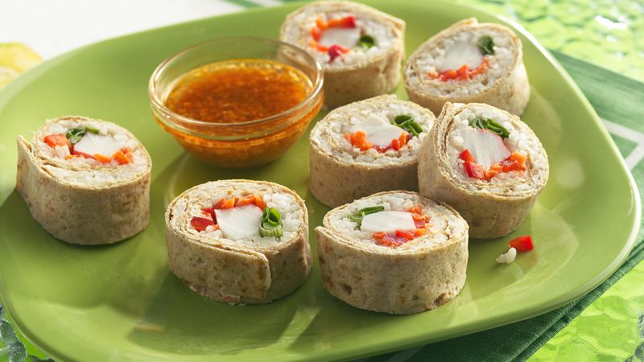

Sushi

Description
Skip the seaweed! Wrap sushi ingredients in whole wheat wrappers, then dip in a spicy sauce.
Ingredients
Wraps
- 3/4 cup uncooked sushi (medium-grain) rice
- 1 cup water
- 3 tablespoons seasoned rice vinegar
- 3 whole wheat roll-ups (9 1/2x8 inch; from 8-oz package)
- 6 tablespoons garden vegetable cream cheese spread (from 8-oz container)
- 1/2 cup shredded carrot
- 1/2 cup chopped red bell pepper
- 6 to 8 (about 1 oz each) refrigerated imitation crabmeat sticks
- 3 green onions, trimmed to 8-inch length, halved lengthwise
Dipping Sauce
- 2 tablespoons finely chopped gingerroot
- 2 tablespoons red wine vinegar
- 2 teaspoons sugar
- 1/4 to 1/2 teaspoon roasted red chili paste
- 2 cloves garlic, finely chopped
- 1/3 cup plus 2 teaspoons reduced-sodium soy sauce
Steps
-
In 1 1/2-quart nonstick saucepan, heat rice and water to boiling. Reduce heat to low; cover and cook 15 to 20 minutes or until all water is absorbed and rice is tender. Meanwhile, place 15x10-inch pan with sides in freezer to chill.
-
Drizzle rice vinegar over rice while lifting and fluffing rice; spread rice in chilled pan. Place in freezer for 5 minutes to cool completely.
-
On work surface, place 1 roll-up with short sides at top and bottom. Spread 2 tablespoons cream cheese over entire surface of roll-up. Spread 3/4 cup cooled rice over cream cheese, leaving 1 1/2 inches of top short edge free of rice. Starting 1 inch from bottom short edge, arrange narrow row of carrot, row of bell pepper and row of crabmeat crosswise over rice. Above crabmeat, place 2 onion halves, alternating ends so there is one green end and one white end on each side. Press all layers into rice.
-
Bring bottom edge of roll-up over fillings to top edge of rice; pull bottom edge of roll-up back toward bottom, scraping rice into roll and fillings to make a firm roll (be sure there are no air spaces). Roll up, letting cream cheese seal the roll. Wrap in plastic wrap. Repeat with remaining ingredients, making 2 more rolls. Refrigerate rolls 1 hour.
-
Meanwhile, in small bowl, mix dipping sauce ingredients. To serve, trim ends of each roll; cut each roll into 8 slices. Serve with dipping sauce.